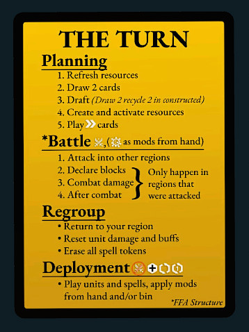
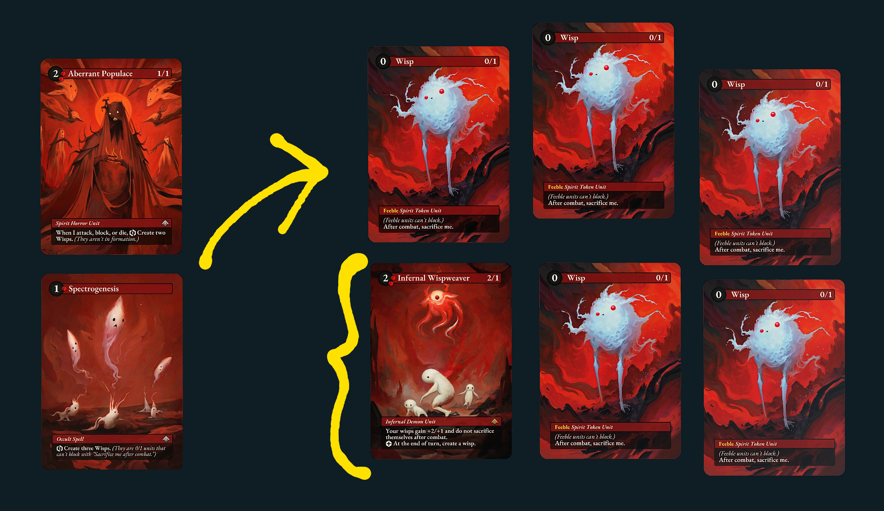
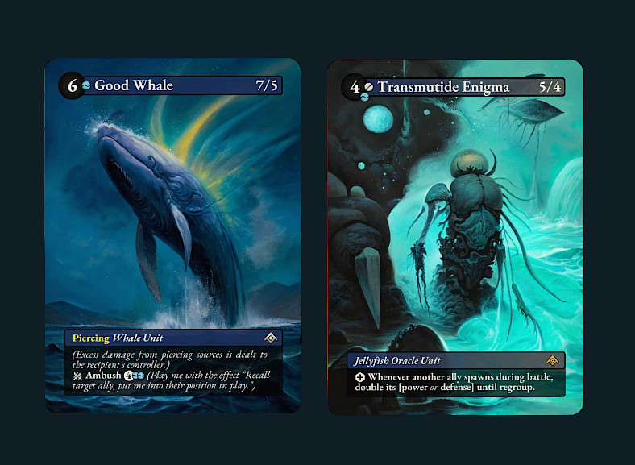
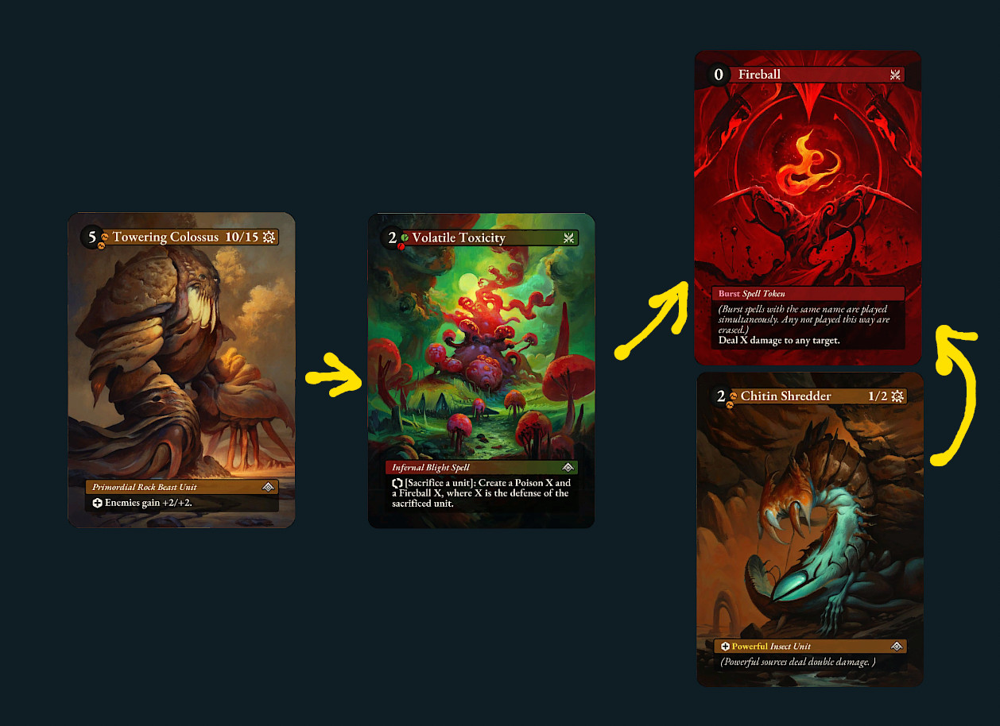
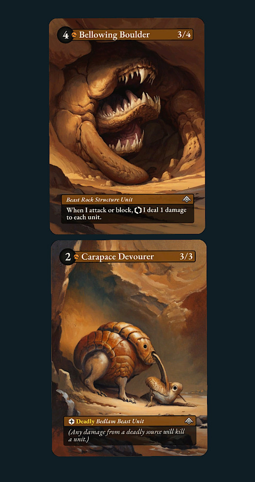
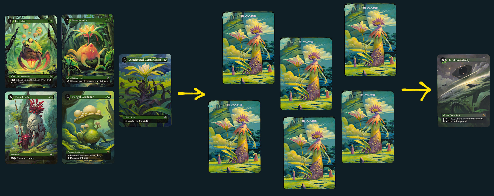
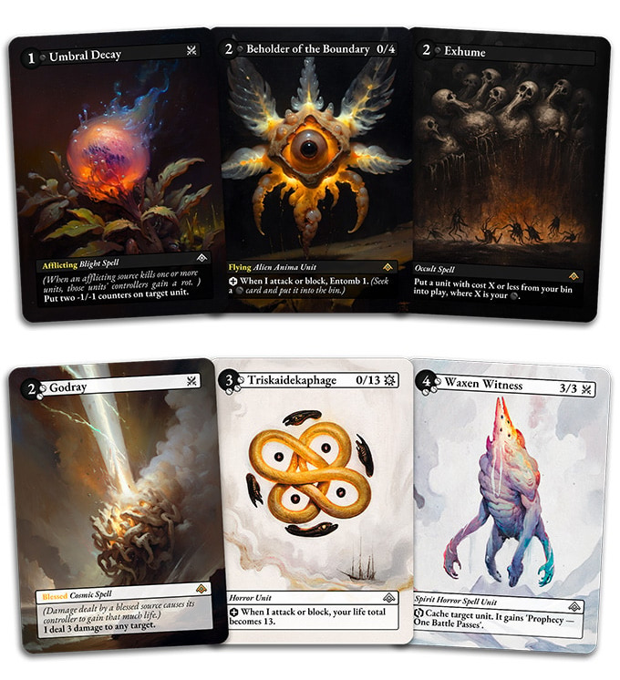

Algomancy: A Platonic Ideal
Occasionally, just the right combination of frustration, vision, people, and process come together to give birth to a generational product. Something that does precisely what it intended to do. That doesn't mean it's a hit right away, or even that its first run at the market achieves any more than cult status. But its fire is there, producing heat under the ashes for the morning to come. Someday, a critical mass turns over those ashes and finds those glowing coals, and chooses sit down to brew a cup of coffee.
So it is that I've searched far and wide for a non-collectible card game that scratches the TCG itch. Something with the complexity of Magic, but with just the right tweaks to its formula and awareness of the one-box constraint to produce a veritable chemical lab in a box, and set us all loose to experiment to our hearts' content.
Algomancy is the game I have been searching for.
"It's Like Magic"
When one has a bone to pick with Magic: The Gathering, the list of complaints is long and easy to compile: A frustrating and random mana system, ultra-rare and expensive cards that lay waste to any format they enter, hyper-fast set cycling that requires players to run the treadmill of new products. Many a player has felt the pain in their wallets for daring to keep up with Magic as a lifestyle game. And many players are finally questioning their Stockholm Syndrome, then trying to find other ways to scratch the itch.
Brunoise
The usual answer is: Just craft a cube! Build a pool of cards you like, pay once, draft and play forever. Though, eventually even that runs into an inevitable wall, where the lower-value your cards, the more limited the archetypes and interactions you can fit into a single cube. You can also fiddle with house-ruling the game's mechanics to promote some interesting gameplay. But it can only be taken so far before you run head-first into numerous keywords, card text, and card symbols that interact only with Magic's rules-as-written. Plus, many of Magic's low-value cards are just boring.
It's fitting that a cube YouTuber should be the one to formulate possibly the most brilliant Magic-alternative game ever conceived, built especially for cube drafting. Given some of his design breakdown videos, Caleb Gannon has clearly put a lot of thought into the mechanics and interactions that make Magic a fun and interesting system to play with and experiment within. He's identified where it needed to be more restrictive, but also where it could be loosened up. Crucially, he's considered where those sorts of changes could enable the dream: A Magic successor in one box. A cube game with so many potential cross-cutting archetypes and interactions, you could draft from it forever and still discover new things.
I definitely haven't hit that "forever" point yet, but having a few plays under my belt, this is far and away the meatiest, thinkiest, most fun riff on Magic's highly interactive system I've ever seen. It outstrips entire new-generation TCGs, combining more subtle yet innovative lightbulb "aha" changes into one game than the entire field has managed in the past decade. Little of it is completely original or wholecloth, but each ingredient was carefully considered and applied for maximum impact within the overall gameplay formula. To wit, as an actual game (rather than a hype-driven FOMO ecosystem), I'd place it head-and-shoulders above all the new hotness, such as Riftbound or Star Wars Unlimited. Many of those TCGs make changes for the same reasons we all complain about, but inevitably stray too far into simplifying systems or restricting combinatorial possibilities.
Stay In Your Lane
A big part of my search was sifting through the bevy of excellent small-box card games: Air Land & Sea, Lone Wolves, Gosu X, Pillars of Fate, etc. These all offer something, but they suffer from the same recommendation-cycle curse: Less design- and systems-aware people throw around the claim of "It's like Magic!" when the mechanics don't draw any parallels. You get to enjoy a thoroughly well-crafted game, but it never scratches the same itch.
It's particularly bad with deckbuilders. That genre involves incrementally building self-executing card-draw engines, often with nary a player interaction at all. Magic involves crafting combo engines designed to actually swing at your opponent while deftly timing those swings, with all sorts of hidden information and counterplay to disassemble your opponent's board. What do these have to do with each other? I guess they both have...cards. With text on them. But I digress.
Lane battlers are great fun and arguably the closest a small box game gets to offering the depth of a TCG. But never the breadth. Algomancy brings that breadth in spades, and blows away most small-box games, so it's not quite competing on the same level.
"It's Better Than Magic"
As I mentioned, Algomancy sticks very close to the Magic gameplay formula, but makes some pointed and critical changes that constrain some parts of the game loop while loosening up others.
New Restrictions
Fortunate Timing
Magic has a Combat phase surrounded by two Main phases; slow-speed spells can be played during either Main phase, letting you set or reset the board with new casts before and after battle.
Algomancy removes that flexibility. Slow-speed spells and units can only be used at the very end of the shared simultaneous turn during the Deployment phase; cards played any phase before Deployment must have special timing to be used. This significantly changes the triage calculus of the entire game. Picking what cards to keep in hand during the Draft step has you weighing what might be immediately useful this turn against what can wait until end of turn to set up a good board state for the next turn. Combat becomes a careful brinksmanship of determining what you can afford to have destroyed before being able to deploy reinforcements. The most powerful long-term units and spells can rarely be cast with Haste or during Battle. And thankfully, there is no universal Instant speed; instead, the Battle phase has designated priority steps for playing Battle and Virus cards, which can be responded to ad infinitum and which resolve using a stack just like Magic.

Algomancy's turn structure. Deployment, essentially the "Main Phase" in Magic, happens only once at the very end of the turn. Slow-speed cards will have to wait.
Regional Dominance
There are also restrictions to what can be targeted, by way of the concept of Regions. Each player exists on an island that may as well be a separate plane of reality. Cards cannot interact with anything not in their region, and thus no player can interact with any other. That is, until the sole exception of Battle, which is, crucially, not actually an exception. Declaring attackers means that those units move to another player's region, fully. Once they cross the line, they can interact with cards within that player's region, but no longer interact with your own home region.
Want a unit's cool "After Combat" effect to trigger? It must enter battle, some-way some-how, exposing it to risk; either it tags along for your own attack, or you must be attacked. Want to cast a crazy damage spell? You can't do it out of the blue; you must send units into battle against your intended target (or be attacked by it), and the opponent may have the opportunity to counter-attack with it, isolating it from your units and potentially foiling a powerful chain of combo triggers. Here's the big one, though: Is a certain unit providing an army-wide buff to your own units? They all have to go into battle together. You must put the buffing unit in mortal danger to benefit from its boon. The tradeoffs involved are intoxicating compared to Magic's Wild West of global spellcasting.

This Wisp engine might be scary, but Infernal Wispweaver MUST enter combat with the Wisps for its effect to apply.
New Freedoms
A Round of Draughts
Most card games have you drawing 1 from the deck each turn. Some one-box games share that deck between both players. The problem that emerges here is top-decking: It's difficult to build around a guarantee of anything and you're forced to work with what you draw. Or not, because what you drew cannot answer anything. Magic's solution is for standard constructed play to allow for four (4!) copies of a card in a deck. This doesn't feel great for variety.
Algomancy's solution is to heavily integrate drafting into gameplay itself. In constructed play, you draw 4 and recycle 2 each turn. In live draft play, you draw 2, pick up a pack of 10, combine it all with your hand, and pick anything you want to keep before passing some pack of 10 to your opponent. You are guaranteed to see your cards, or (in live draft) new stuff that could benefit you. Picking becomes a matter of trade-offs: What cards have the timings and effects you need, how much mana do you need to recycle for this turn, and (in live draft) what are you okay with handing to your opponent for next turn? This is a nail-biting experience where actually considering effect interactions matters, especially because cards have multiple uses: How will this work played as-is? How will it work as a graft or augment, and to whom? How will this interact in formation? Where do I play it to add value, or draw attention from something else that has value I want to keep?
Never have I seen a game so totally embrace simply milling through the deck, presenting you options, and expecting you to formulate some kind of plan that's better than your opponent's. It puts all of the agency over the interactions and combos directly in the player's hands.

Just a terrifying Ambush swing of 14 Piercing out of the blue. Ouch.
Mod Tools
Algomancy distinguishes two ways of modding card effects onto other cards: Augments, and Grafts.
Augments are card effects and attributes (keywords) which can simply be glommed onto a unit you have on the field. Maybe give a big swinger Piercing (Trample) it didn't already have. Or add an army buff where all your other units deal one extra damage. You can even augment spells while they're being cast. Augment a Fireball with the Powerful keyword from a Virus unit to double its damage!

An official creator-sanctioned one-hit KO. Using a Powerful augment to turn a Fireball 15 into a Fireball 30.
Grafts are stackable trigger effects. If a unit on the field has a graftable trigger and effect, you can mod any other graft effect on it, and it becomes a single giant effect that triggers off of the top unit's condition. Maybe the trigger of one unit's graftable "Draw a card" ability is super inconvenient ("When I die"), but you could paste it onto another unit that has a graftable "When I attack" and just swing to draw a card. All graft abilities stacked on one unit are treated as one giant effect on the stack, which could be countered.
In addition to cards in hand, both Augmenting and Grafting can be done using cards in the bin (discard pile). Every card you lose to the bin is a pool you can pay from again to put specific effects back on the board. But in doing so, you balloon the value of units on your board, making them juicy targets for removal. Plus, modded units that die, and their mods, are erased (exiled). There are no effects in the game that interact with or bring back erased cards. There's a fantastic give and take, risk/reward calculation here.
This does something fascinating for Algomancy's design space: There don't have to be any bad cards. Basic creatures often have augmentable keywords. Lots of small chump units have graftable or augmentable effects. All of these dying and going into the bin adds to a pool of possibilities for adding to your future board state.
You still have to pay those mana costs again. Both grafting and augmenting are slow-speed effects that happen only during Deployment, unless the card has Virus speed. These all need to be weighed against the potential options you obtain from new cards during the draw and draft. But there's SO much room to create explosive concoctions of trigger effects that blast Commander-like board states at your opponent. So very satisfying.
Ranked Play
Combat in Algomancy has an interesting added spatial component: Units are arranged in a battle line, but also in two ranks, with a rear rank unit taking damage only after the unit in front of it is killed. But those ranks have an interesting twist: Attribute keywords (Deadly, Piercing, etc.) are shared in a column.
When formulating an attack, there are whole new considerations present. Units you want to protect from dying could be placed in the rear rank, so long as you properly calculate the maximum potential attack power of an opposing column. Shared keywords can propagate some crazy effects. Put a Flying and Powerful unit in a column, and you've got a heavy swinger going straight over your opponent's heads! It forces removal play they might not otherwise want to do.
Because the initiative player declares attackers first, before the non-initiative player then responds with counter-attacks, and both combats happen in completely isolated regions from each other, there's a fascinating combat dance mind-game. Both players are trying to bait specific units into combat to blast them with specific combo effects and removal, while preserving their own value. And the non-initiative player technically has a slight advantage, getting to see the attacking deployment before deciding. Another meaty system of tradeoffs to sink your teeth into.

This column, good friends, wipes the region as soon as it enters combat.
Mana Dorks
All of these changes are arguably more interesting than Algomancy's deterministic mana system, but that too is a fun subsystem to play with.
All resource cards come into play dormant. You may activate two per turn. You start with two Prismites, which can be tapped for mana but provide no color affinity. Uniquely, they can be swapped for a colored resource at any point, to start building affinity.
The only way to obtain new resource cards is to Recycle cards from hand after the draw and draft, requiring you to limit your potential play options. There's a tradeoff here, though: For every additional affinity (face up resource) of a color you obtain from 3 on, you get a free neutral Shard resource (dormant of course).
Ramp isn't a chance, it's a choice. A potentially expensive one. But so is investing into multicolor strategies. This also plays very well into late game: At a certain point, investing into new resources becomes prohibitively expensive given the dense board states that demand optionality in-hand. But even at 10-12 mana, all available options (cards in hand, grafts & augments in the bin) are numerous, and you can't possibly play everything you'd want. The choice to continue ramping late-game is still present, but recycling for mana becomes riskier and more expensive as time goes on and the field fills up.

Don't let a Flower engine get out of control. Floral Singularity will end you.
Good Combos
All of these mechanics taken together give rise to a play space of numerous cross-cutting decisions, effects, and considerations. In turn order:
- Planning: What cards am I drafting now that can be immediately useful? Which can wait until Deployment to set up the next turn(s)? How desperately do I need to recycle for new mana? Do I ramp mono, or slowly accrue multicolors I need?
- Battle: Which effects do I absolutely need on offense and defense? How can I best protect my valuable modded or keyword cards in my formation? Which counter and removal options do I have in hand to protect my formation or whittle away my opponent's?
- Deployment: What cards in my hand should I Deploy? These compete for mana against the effects in my bin; which should I mod? What mods create value on the board without building up too much of a removal target?
TCGs are often guilty of presenting an "optimal" play sequence between your hand and board state. That's a LOT less clear in Algomancy, and there are many potential options each turn.
Downsides
This biggest downside to the game is multiplayer. Even with 30-card constructed decks, the combat step simplified, and only being able to attack your direct neighbors, the decision space rapidly scales beyond that of Magic's Commander format, with turns taking exceedingly long to evaluate. This is after playing a half dozen games becoming accustomed to the rules, and excluding time for any detailed resolution lookups. It's a guaranteed a multi-hour commitment.
My easiest idea to help simplify multiplayer would be a "king of the hill" mode: Have a few artifacts or locations in the middle of the board, which are either captured or fought over to pull into player regions. As long as those artifacts are held by players, their scores tick up to an eventual goal. But that's just spitballing.
1v1 is where the game shines. If you're going to draft with a bunch of people, run a tournament bracket!
AI Art
Much ado is made about Algomancy's use of hybrid AI art, so first I'll give my takes on the art itself:
I'm fine with it. It's saturated, pretty, full-art, and as ethereal as a machine-dream world should be. However, it's clearly made by some older "second-generation" models, and the different card types are lacking specificity. Common patterns of cube, sphere, mushroom, and skeleton/robot shapes front-and-center appear quite often. Some art doesn't quite match the title or effect, or if so only by a thread.
The ethereal-ness really hits its stride with the work-in-progress Light and Dark colors, where it works perfectly. True horror straight out of the esoteric.

Algomancy's upcoming Light and Dark colors lean into cosmic horror and esotericism, a perfect fit for Stable Diffusion's ethereal outputs.
The handmade graphic design is uniformly excellent. The rulebook is minimal and clean, and the card elements are essentially ideal, with great-looking serif fonts inside crisp containers, and clean readable icons.
Now to comment on the process:
One-Man Show
Most TCG release sets are the same size as Algomancy's card pool, and as part of that process, card art is made by dozens of artists who each might be able to output a couple of works. Even huge corporations have had to recycle art from entire previous projects (Riot recycled Legends of Runeterra art for Riftbound; Blizzard recycled WoW TCG art for Hearthstone). Wizards has dozens of artists producing dozens of unique pieces per set, and they have a near-perfect logistics and process chain for churning these arts out. Each set's art costs about as much as Algomancy's entire Kickstarter budget at that level of maximum process optimization.
If you want striking art on 300+ unique cards but are 100% dogmatic on hiring real artists for all of it, this necessarily puts such a project out of financial reach of everyone except large corporations or home-run blowout funding successes, via either Kickstarter or private funding; this financing floor precludes niche products or very small teams.
Algomancy is very nearly a one-man show. Making an entire cube game with a core team of one and a few contributors is a stunning demonstration of how technology and tools make such projects possible. For every two-dozen sloppy money-grabs or creatively bankrupt also-rans in the dregs of Kickstarter and Gamefound, you'll find a brilliant creative vision like this from a tiny team that pushes the tools to their full potential. Unfortunately, most people are hostile to that possibility at its core.
Caleb could just as well leave Algomancy as-is. But if he ever wants the PR win to bring in more TCG players, I see two possibilities in the future for a hypothetical new edition: Make use of newer models and the incredible tricks they can pull, or find an efficient way to pull the same ethereal and haunting atmosphere from real artists, that will necessarily require simpler art and faster turnarounds to minimize cost.
Alternatives
This drive to make a TCG-like experience in one box isn't new, and I've explored several in my time. These are among the most prominent:
- Epic - The one-mana system makes for very swingy games of whiplash. Plenty of cards, though. Doesn't clear the bar.
- Chroma Arcana - So timing-based it's almost a programming game. Doesn't quite meet the bar. Gorgeous minimalist watercolor art. Colors taken as a block, so less draftable.
- Gosu X - This game is different. Like a power-scaling version of Gwent. Gets VERY close to the bar. Colors also taken as a block, so less draftable.
- Radlands - Neat deterministic water system. Everything else doesn't quite meet the bar. Shared deck and very topdecking-reliant.
- Summoner Wars - Haven't played. I've recently soured on tactical grid gameplay; many games devolve into monotonous chases and long-range pebble-slinging.
- Ashes - Haven't played. I don't like its art at all. Boring character poses, too romantasy-coded.
- Netrunner - Haven't played.
In Conclusion
Algomancy beats all of these (that I've played), and makes a strong claim for the throne of the Platonic ideal of Magic. It's a project masterminded by one man, self-published as a tiny collaboration, and released to a passionate niche. With so many potential combinations of cards, and with just the right limits to their application, it scratches the brain wrinkles in all the right ways. Plus, you only have to buy one box.
I await Light & Dark with bated breath.
← Back